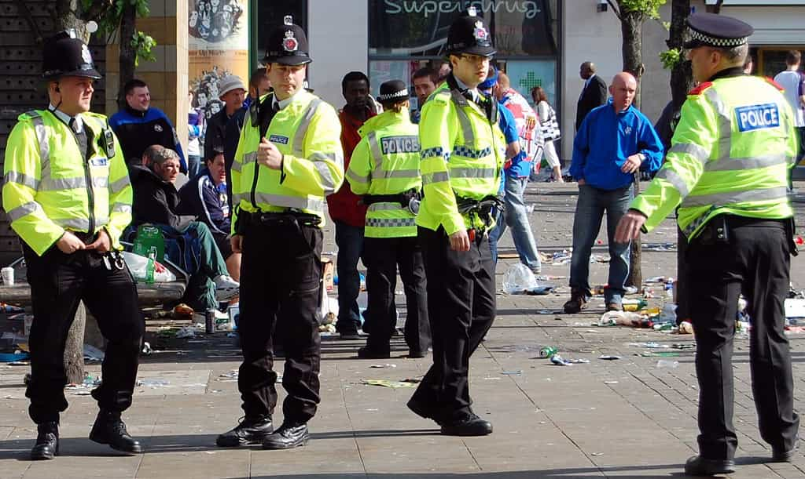

< < < Back
British Police Chief Will Prioritize Online Abuse Reports Over Burglaries – Return Of Kings
The first leader of Britain’s National Police Chiefs’ Council, Sara Thornton, says that British residents cannot expect police to respond to burglary reports anymore. Because of funding cuts, Ms. Thornton, the former Chief Constable of Thames Valley Police, says that online abuse cases and allegations of “sexual assault” will take precedence.
Therefore, the police will take Twitter “abuse” (politically incorrect jokes, maybe?) more seriously than someone breaking into your home with a crowbar and looting it. This is despite the usually ample evidential opportunities burglary reports provide relative to sexual assault cases, of which many are of the he-said-she-said variety.
Welcome to the world where a tweet can land you in more trouble than breaking into someone’s home.
I am not someone who denies that sexual assaults occur. They certainly do. Like murder, serious assault, corporate fraud and other serious crimes, one case of these incidents is theoretically too many. But they are nonetheless perpetrated by a minority in society. They are not widespread. As the Harvard academic Steven Pinker relates, violent acts in particular are at historic lows. Thornton’s dismissal of the importance of attending to burglary reports gives the illusion that we are somehow facing an epidemic of sexual assaults.
Furthermore, “online abuse” is the most poorly defined and often ridiculous category of criminal offence. Instead of creating actual harm, most of the time “offenders” are punished for hurting someone’s feelings. Unless there is a well-founded fear of real-life harm from a tweet or something similar, there is more of an argument for criminalizing adultery (which I’m not saying should be criminalized, by the way) or low-end schoolyard bullying than the very vague concept of “online abuse”.
Sara Thornton’s priorities only affirm the lack of due process for those accused of sexual assault

Police ignoring burglary reports will only increase the feeling of burglars that they can act with virtual impunity, increase the chances of violence against the property owners, and force homeowners and others to respond with more force against offenders than they otherwise would.
Sadly, evidence-poor reports of sexual abuse in modern times result in both social witch hunts and a systemic lowering of the standard of proof. Whilst police investigations are not “court processes” per se, those accused of sexual assault are now required to “prove” to police in Britain that they had consent, whatever that benchmark means and however it can possibly be satisfied.
Functionally, all this does is shift the pre-trial burden of proof, which should be on the state, to the accused. In the meantime, the actual collection of evidence, and the underlying strength of the police case, is left by the wayside.
Of course, the laying of police charges should not have to conform to “beyond reasonable doubt”. The idea is to properly test what is deemed to be evidence in a court of law. The problem is that even when we move to the courts, legal processes have been watered down specifically for sexual assault cases. Without any other evidence, aside from he-said-she-said, you would not see regular convictions for tax evasion, armed robbery, serious assault and other crimes, especially if the alleged incident took place years or decades ago. This is routine for sexual assault cases, however.
Reports of serious crimes must be investigated, emphasizing the EVIDENCE

What’s more likely to lead to a tragic outcome, impolite, rude comments on Twitter or someone ransacking your property and then turning on you when you discover them doing it?
Testimony of a complainant is part of the overall evidentiary framework. I do not refute this. But for it to be the only or preponderant evidence is a very dangerous path to take. It beggars belief that Sara Thornton, and presumably some of her senior colleagues, would largely abandon responding to burglary reports but divert more resources to investigating crimes where objective evidence of the kind demanded for almost every other criminal category is severely lacking.
The primary responsibility of the police is to protect citizens and maintain social order. “Order” to most people would mean the protection of property and person, which often dovetail where burglaries are concerned. Amidst the protecting, police need to be searching for and uncovering quality evidence that can be used to prosecute alleged offenders.
Clamping down on keyboard comments (which create far less damage and injury than burglaries) and he-said-she-said sexual assault allegations is a slap in the face to the millions of Britons who will suffer from having their property stolen and their homes violated. And what happens when these homeowners and their families are seriously injured or killed?
Burglars now have a much stronger get-out-of-jail free card thanks to Sara Thornton.
Read More: Lesbian Chief Constable Forces Bearded British Cops To Wear Beard Nets